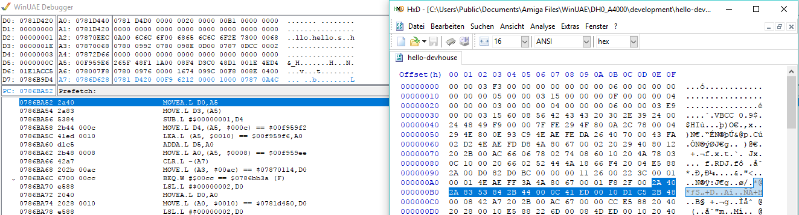

Making of Wirklichkeitssteuerungsgeraet
What was that?!
A video presentation showing a geraet mounted on a motorcycle which allows to control games from the motorcycle on either a real Amiga or an Amiga emulator running on a mobile phone.
Cracking (old) games
Good old copy protections
Machine code
Hack it
Amiga graphics
Chunky image format
Bitplanes
5 Bitplanes
Run-length encoding
00 00 00 00 00 01 02 03 03 03 03
▼
5*00 2*literal 01 02 4*03
▼
FB 00 01 01 02 FC 03
A (crappy) implementation in rust
Amiga Tooling
Amiga Joystick

USB HID (Human Interface Device)
- HID Report Descriptor describes the device
- MANY primitives to describe all sorts of devices
- Several device classes (keyboard, mouse, gamepad etc.)
- HID Descriptor allows the Host (your computer) to interpret the raw data being sent by the device
const uint8_t hid_report_descriptor[] = {
0x05, 0x01, // USAGE_PAGE (Generic Desktop)
0x09, 0x05, // USAGE (Gamepad)
0xA1, 0x01, // COLLECTION (Application)
0xa1, 0x00, /* COLLECTION (Physical) */
0x05, 0x01, /* USAGE_PAGE (Generic Desktop) */
0x09, 0x30, /* USAGE (X) */
0x09, 0x31, /* USAGE (Y) */
0x15, 0x81, /* LOGICAL_MINIMUM (-127) */
0x25, 0x7f, /* LOGICAL_MAXIMUM (127) */
0x75, 0x08, /* REPORT_SIZE (8) */
0x95, 0x02, /* REPORT_COUNT (2) */
0x81, 0x02, /* INPUT (Data,Var,Rel) */
0xc0, /* END_COLLECTION */
0x05, 0x09, // USAGE_PAGE (Button)
0x19, 0x01, // USAGE_MINIMUM (Button 1)
0x29, 0x02, // USAGE_MAXIMUM (Button 2)
0x15, 0x00, // LOGICAL_MINIMUM (0)
0x25, 0x01, // LOGICAL_MAXIMUM (1)
0x75, 0x01, // REPORT_SIZE (1)
0x95, 0x08, // REPORT_COUNT (8)
0x81, 0x02, // INPUT (Data,Var,Abs)
0xC0, // END_COLLECTION
};
CAN Bus

- Used to exchange messages within vehicles
- ISO Layer 1 and 2
- Modern cars use ethernet
- CAN members will do simple, continous broadcasting
- Implicit priorities using the address
A CAN message
| Address | D1 | D2 | D3 | D4 | D5 | D6 | D7 | D8 |
|---|---|---|---|---|---|---|---|---|
| 0x10c | FF | 00 | 00 | 00 | 16 | E5 | FF | FF |
Byte 7 indicates the throttle is at full (00 would be no throttle)
IMU Sensors
What does it do?

- Tons of different sensors available
- Varying features. Some provide completely free 3D movements (expressed in DOF - Degrees of Freedom)
- Originally started with Bosch bnO055 (enterprise grade 9 DOF sensor)
- Ended up using a MPU6050 based solution (6 DOF)
Hardware Tooling
Thanks!
- https://soundcloud.com/subdream
- http://www.pouet.net/prod.php?which=69676
- https://github.com/m0ppers/wirklichkeitssteuerungsgeraet
- https://www.reaktor.com/blog/crash-course-to-amiga-assembly-programming/
- https://docs.google.com/spreadsheets/d/1tUrOES5fQZa92Robr6uP8v2dzQDq9ohHjUiTU3isqdc/edit#gid=0
- http://mrjester.hapisan.com/04_MC68/